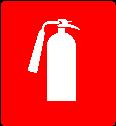

GASILNIKI
GASILNIK SPADA MED NAPRAVE ZA ZAČETNO GAŠENJE POŽAROV. GASILNIKE DELIMO GLEDE NA VRSTO IN KOLIČINO GASILA, KI JE V GASILNIKU IN NAČIN DELOVANJA GASILNIKA GLEDE NA TLAK V GASILNIKU. PO TLAKU V GASILNIKU DELIMO GASILNIKE NA TISTE S STALNIM TLAKOM IN GASILNIKE, KI VSEBUJEJO POTISNO JEKLENKO S STISNJENIM PLINOM, KI V PRIMERU GAŠENJE PREDSTAVLJA POTISNI PLIN.
GASILNIKI SO LAHKO GLEDE NA GASILNI MEDIJ NAPOLNJENI Z:
LOKACIJA GASILNIKA V OBJEKTU MORA BITI OZNAČENA Z OZNAKO (PIKTOGRAMOM).

SLIKA 3: OZNAKA MESTA GASILNEGA APARATA
IZBRANI GASILNIKI SE NAMESTIJO NA VIDNIH IN DOSTOPNIH MESTIH, V BLIŽINI DELOVNIH MEST IN TAKO, DA JE GLAVA Z MEHANIZMOM ZA AKTIVIRANJE V VIŠINI 80 DO 120 CM OD TAL.